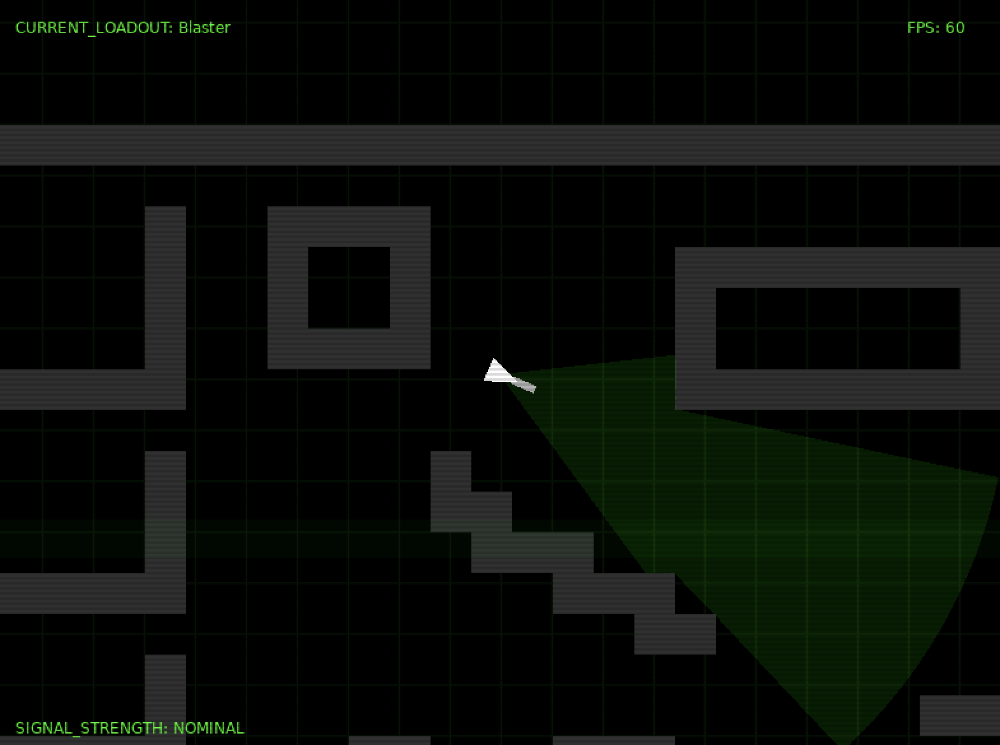

epiclovegame
epiclovegame is a game built in the Love2D framework (if you couldn't tell).
It's fully open source, so you can check it out and help with development if you'd like.
Love2D has been used to make many popular games such as Moonring, Intravenous and my personal favourite, Balatro
Love2D isn't a game engine, but rather a framework for Lua to be able to run games. You might know Lua from Roblox scripting,
the Cryengine game engine, Angry Birds or World of Warcraft's UI.
epiclovegame (name pending) is a top-down shooter where you are a remote operator for a security robot.
My game is inspired by other top-down shooters like Hotline Miami, Red Hot Vengenace and Ape Out.
